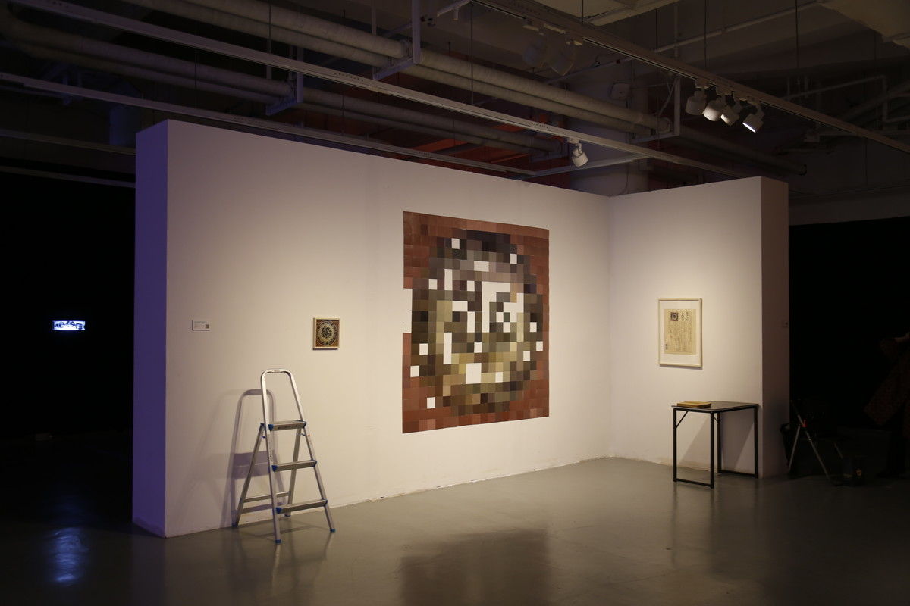
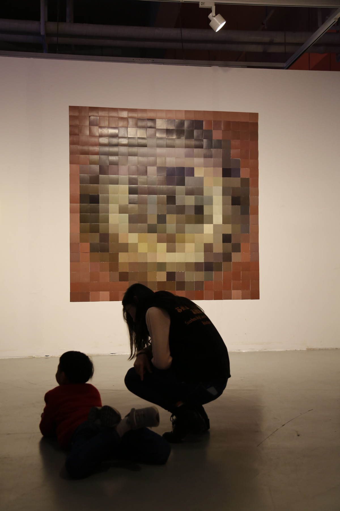
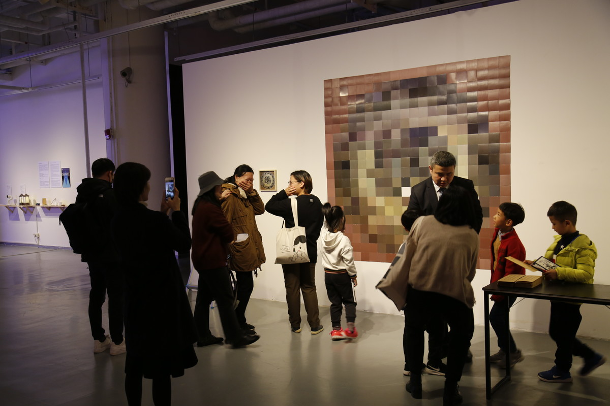
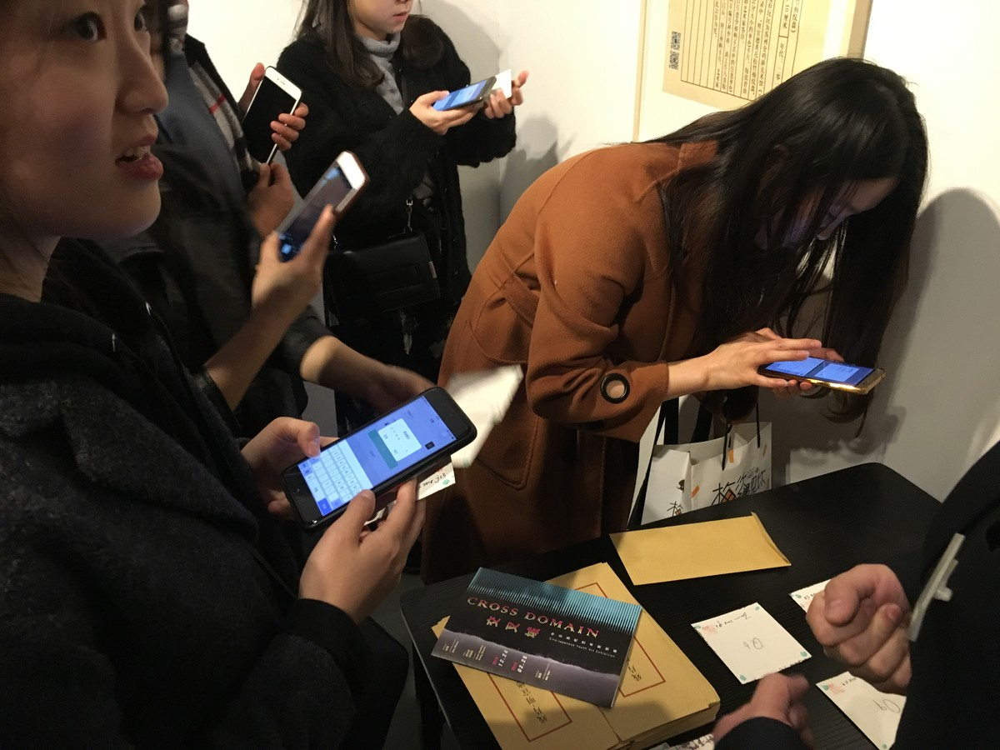

残片：明宣德青花松竹梅纹盘 | FRAGMENTS: BLUE-AND-WHITE PLATE WITH PINE, BAMBOO AND PRUNUS XUANDE REIGN, MING DYNASTY

卡纸上丙烯10x10cmx400，铝制扶梯，宣纸上打印，录像为彩色单屏幕双声道可变尺寸，6分钟，2018
Painting, Interactive art, on-site integrated media, video, acryl 10x10cmx400 on cardboard, aluminum escalator, printed on rice paper, video for color single-screen dual-channel variable size, 6 minutes, 2018
将一张“明宣德青花松竹梅纹盘”的图像分解成 10x10cm 的马赛克单色图像 400 张， 卡纸丙烯着色。在展览期间，观众可以以任意价格购买其中的每片颜色 (10x10cm),艺术家承诺 3 年以后以 2 倍的价格回购。
这张 200x200cm 的“青花瓷盘”将很长时间处在一个残缺状态，或许是永远。
I decompose the image of plate in blue and white texture of pine tree, bamboo and plum blossom in the Ming dynasty to 400 monochrome images of 10x10cm , drawn by acrylic on paperboards .During the exhibition, audience can buy each pieces of color (10x10cm) at any prices ,the artist promised he would buy-back at double prices after 3 years. This plate in blue and white of 200x200 will being a broken situation for a long time or even forever.

金鸡湖美术馆，苏州
Jinji Lake Art Museum, Suzhou

金鸡湖美术馆，苏州
Jinji Lake Art Museum, Suzhou

金鸡湖美术馆，苏州
Jinji Lake Art Museum, Suzhou